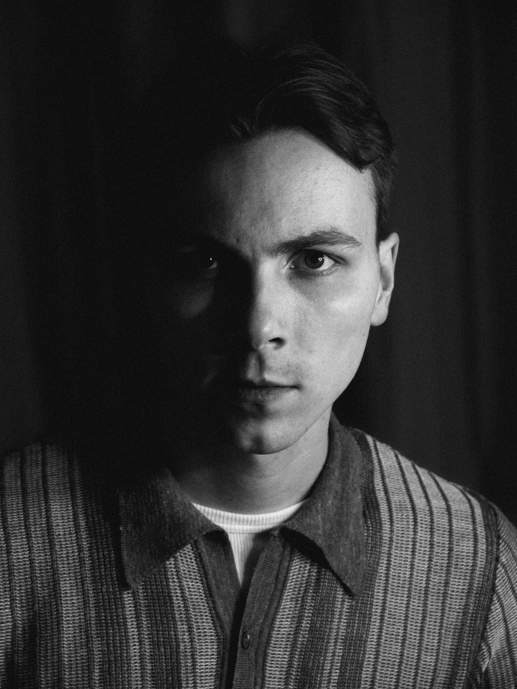

FILMER.
REGARDER.



Je suis Mars Kircher.
Je travaille aujourd’hui comme chargé de développement dans une société de production audiovisuelle indépendante, où je développe des projets documentaires, mène des recherches, accompagne les auteurs et réalisateurs et participe à l’écriture et à la conception des films.
Après une licence de Droit et une licence d’Histoire à l’Université Paris 1 Panthéon-Sorbonne, j’ai poursuivi mes études dans le master Histoire et Audiovisuel de la même université. Cette formation, à la croisée de la recherche historique et de la pratique audiovisuelle, m’a permis de travailler sur l’histoire et les théories du cinéma et des médias, les archives audiovisuelles, ainsi que sur l’écriture et la réalisation de projets.
J’y ai réalisé un mémoire de recherche consacré à Blade Runner, au cinéma cyberpunk et à sa réception en France.
En parallèle de mon activité professionnelle, j’écris, je photographie, je filme, je monte, je peins et je dessine. Ce site rassemble ces différents travaux, professionnels comme personnels.